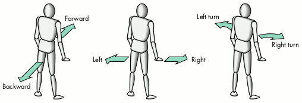
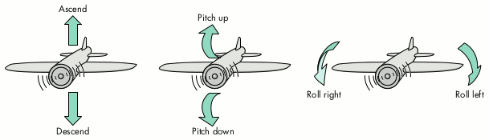
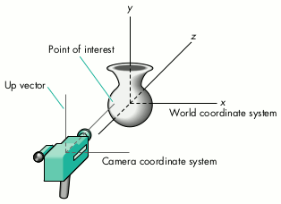
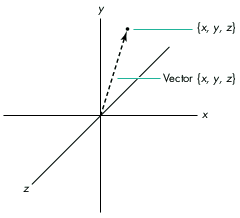
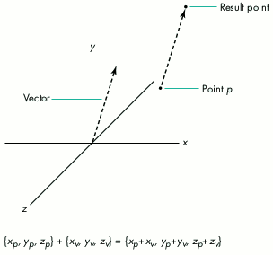
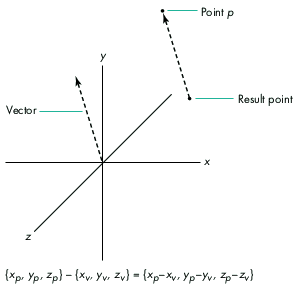
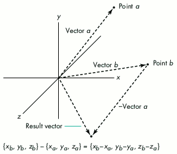
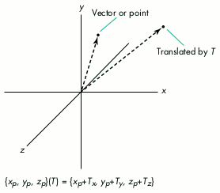
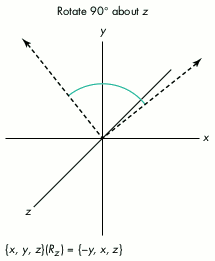

Whether the user is navigating a starship or examining a model of
the DNA helix, your first-person 3D application must allow user
control of the camera movements in a scene. You must keep
changing the camera's position and orientation in response to what
the user wants to see. Here you'll learn how to create those camera
movements and handle the user's directions. As part of the bargain,
you'll even get a refresher course in the associated geometry.
Letting the user control the movement of the camera (and thus the view) is critical to
first-person interactive 3D games and extremely useful in 3D modeling systems.
Through QuickDraw 3D's camera functions and supporting mathematical functions, you
can create game controls that direct the position and orientation of a camera. In
general, game controls take user input from any input device and control the camera in
ways that emulate movements of players, such as people or aircraft. Game controls are
useful for any type of 3D viewer application, including 3D Internet browsers.
You'll start your career as a camera operator by learning about the basic moves you
can make with the camera. Then you'll create the various camera movements, keep the
camera movements smooth, and translate user inputs to move the camera. The sample
code (which is provided on this issue's CD) is a 3D viewer application with camera
movements activated by the keyboard or the mouse. In all of the code, the geometry has
been kept as simple as possible, but if you need to brush up, you'll find a refresher
course on calculating points and vectors in 3D space.
For an overview of QuickDraw 3D, turn to "QuickDraw 3D: A New Dimension for
Macintosh Graphics" in develop Issue 22. That article discusses topics like reading
models, using a viewer, creating a camera, and managing documents that have 3D
information. To learn more about those and related topics, see the list of recommended
reading at the end of this article.
We'll be controlling camera movements based on first-person viewing, so the camera
will be our eyes. But before we move through a scene, let's take a look at the kind of
camera moves we plan to use. The camera movements you would create in a 3D game
for a person who is driving a vehicle or walking on level ground are examples of
ground movements. These camera moves include moving forward, backward, sideways
to the left, and sideways to the right, plus turning to the left (pan or yaw left) and
turning to the right (pan or yaw right). Figure 1 illustrates these basic ground
movements.

Figure 1. Ground movements
You can also go airborne with a variety of camera movements. These fancier camera
moves are changes that might be typical of an aircraft. They include ascending and
descending (moving upward and downward), pitching (tilting) up and down, and
rolling (tilting) left and right. Figure 2 illustrates these moves.

Figure 2. Air movements
Now to the fun part -- let's get that camera moving! What you must do to achieve the
previously described camera movements, both ground and air, involves some
geometry. If you're like most of us and have forgotten your 3D geometry, see "3D
Geometry 101" for a refresher course. The 3D geometry for our camera moves is
quite simple; it will stick to the kinds of calculations illustrated in "3D Geometry
101."
First, let's take a look at our world. In Figure 3, we have an object in the world
coordinate system and a camera looking at the object. The camera has its own
coordinate system defined by its location (in world coordinates), up vector, and point
of interest.

Figure 3. Our world
______________________________
3D GEOMETRY 101
If you're new to 3D programming (and perhaps a little rusty on your math),
here's a brief introduction to some of the 3D concepts you'll find in this
article's code.
A point is represented in 3D space by x, y, and z values in a coordinate system.
A vector is a magnitude (length) and direction; it's represented by an initial
point (usually the origin of the coordinate system) and a final point {x, y, z}.
Figure 4 illustrates a point and a vector in 3D space.

Figure 4. A point and a vector in 3D space
To add a vector and a point, you place the vector's initial point on that point
(keeping the vector's direction and magnitude). The new final point of the
moved vector is the point resulting from the addition. (See Figure 5.)

Figure 5. Adding a vector and a point
To subtract a vector from a point, you place the vector's final point on that
point (keeping the vector's direction and magnitude). The new initial point of
the moved vector is the result (Figure 6).

Figure 6. Subtracting a vector from a point
To create a vector between two points, you subtract the vectors defined by the
points (called position vectors). To do this, you first reverse (turn around)
the second vector and place its initial point on the final point of the first
vector. Then you make a new vector from the first vector's initial point to the
second vector's new final point. This new vector has the direction and
magnitude of the vector between the two points (Figure 7).

Figure 7. Creating a vector between two points
A translation of a point or a vector by Tx, Ty, and Tz values moves the point or
the vector by adding the T values to its own values (Figure 8).

Figure 8. Translating a point or a vector by T
In Figure 8, the translation value T is really from the translation part of a
transformation matrix. A transformation matrix is used to transform a point
or a vector by translation, rotation, and scaling. The transformation matrix
you use is 4 x 4 -- with the upper-left 3 x 3 portion acting as the rotation
matrix, the bottom-left 1 x 3 portion acting as the translation matrix, and the
top-left to bottom-right diagonal of the rotation matrix acting as the scaling
matrix. The following transformation matrix has elements labeled for
translation (T), rotation (R), and scaling (S). The fourth column is ignored
for simplicity.
When you apply a transformation to a point or a vector, you multiply by the
matrix, as in the following formula for our point {x, y, z} and a
transformation matrix:
[{Sx*R0,0*x + R1,0*y + R2,0*z + Tx},
{R0,1*x + Sy*R1,1*y + R2,1*z + Ty},
{R0,2*x + R1,2*y + Sz*R2,2*z + Tz}]
As you can see from this formula, if you only want the matrix to apply a
translation (the T's), the 3 x 3 rotation matrix will be all 0's except for the
scaling diagonal, which will be all 1's.
A rotation of a vector through an arbitrary angle about different axes will
use various R elements (the 3 x 3 rotation matrix of the transformation
matrix), depending on which axis you're rotating about. For rotations
of[[theta]] about the x axis, you get the matrix
For rotations about the z axis, you get
And for rotations about the y axis, you get the following matrix:
So to apply a rotation about an axis, you simply multiply the appropriate
rotation matrix by the vector. In Figure 9, the vector on the right is rotated
90deg. about the z axis in the {x, y} plane.

Figure 9. Rotating a vector about an axis
______________________________
We'll be dealing with the vectors making up the camera's coordinate system for many
of our movement functions, so let's keep these in our application's document structure.
We'll keep the camera placement data there as well.
The document structure looks like this:
typedef struct _DocumentRecord {
...
TQ3Point3D cameraLocation;
TQ3Point3D pointOfInterest;
TQ3Vector3D xVector;
TQ3Vector3D yVector; // up vector
TQ3Vector3D zVector;
...
} DocumentRecord, *DocumentPtr;
The first time we set up our camera, we'll set the values in our document to
correspond to the initial camera position. Then with each subsequent movement of the
camera, we'll update these fields. The initial camera data is constructed by the code in
Listing 1. In the function MyGetCameraData, we do some of our geometric calculations
to get the x and z vectors. We subtract the two endpoints (the initial and final points)
of the z vector to get that vector. And we get the x vector by cross-multiplying the y
and z vectors.
______________________________
Listing 1. Initializing the camera data
void MyGetCameraData(DocumentPtr theDocument,
TQ3CameraObject theCamera)
{
TQ3CameraPlacement cameraPlacement;
// Get the camera data.
Q3Camera_GetPlacement(theCamera, &cameraPlacement);
// Set the document's camera data.
theDocument->cameraLocation = cameraPlacement.cameraLocation;
theDocument->pointOfInterest = cameraPlacement.pointOfInterest;
theDocument->yVector = cameraPlacement.upVector;
// Calculate the x and z vectors and assign them to the document.
Q3Point3D_Subtract(&theDocument->pointOfInterest,
&theDocument->cameraLocation, &theDocument->zVector);
Q3Vector3D_Cross(&theDocument->zVector,
&theDocument->yVector, &theDocument->xVector);
}
______________________________
After the fields in our document have been updated by some camera movement function,
we'll want to reset the camera to that new data with the function MySetCameraData
(Listing 2).
______________________________
Listing 2. Setting the camera data after a move
void MySetCameraData(DocumentPtr theDocument,
TQ3CameraObject theCamera)
{
TQ3CameraPlacement cameraPlacement;
// Set the camera placement data.
cameraPlacement.cameraLocation = theDocument->cameraLocation;
cameraPlacement.pointOfInterest = theDocument->pointOfInterest;
cameraPlacement.upVector = theDocument->yVector;
// Set the camera data to the camera.
Q3Camera_SetPlacement(theCamera, &cameraPlacement);
}
______________________________
With that camera infrastructure, we're ready to move the camera around a bit. You can
find the code for all the moves on this issue's CD. Here you'll find only the code for
those movements that are unique. Code for those moves not shown (but previously
mentioned) is almost identical to one of the functions shown in the listings.
To move the camera along the z axis either forward or backward, we call the function
MyMoveCameraZ (Listing 3). This function translates the camera location and point of
interest by the given delta. Note that the associated z vector isn't changed.
______________________________
Listing 3. Moving the camera along the z axis
void MyMoveCameraZ(DocumentPtr theDocument, float dZ)
{
TQ3ViewObject theView;
TQ3CameraObject theCamera;
TQ3Vector3D scaledVector;
TQ3Point3D newPoint;
// Get the view and the camera objects.
theView = theDocument->theView;
Q3View_GetCamera(theView, &theCamera);
// Scale the y vector to make it dY longer.
Q3Vector3D_Scale(&theDocument->yVector,
dY/Q3Vector3D_Length(&theDocument->yVector),
&scaledVector);
// Move the camera position and direction by the new vector.
Q3Point3D_Vector3D_Add(&theDocument->cameraLocation,
&scaledVector, &newPoint);
theDocument->cameraLocation = newPoint;
Q3Point3D_Vector3D_Add(&theDocument->pointOfInterest,
&scaledVector, &newPoint);
theDocument->pointOfInterest = newPoint;
// Set the updated camera data to the camera.
MySetCameraData(theDocument, theCamera);
// Update the view with the changed camera and dispose of the
// camera.
Q3View_SetCamera(theView, theCamera);
Q3Object_Dispose(theCamera);
}
______________________________
To move the camera along the x axis (right or left ) or along the y axis (ascending or
descending), you use code similar to Listing 3. The only difference is that you base the
translation on the change in x or y instead of the change in z. In both cases, the
associated vectors don't change.
Next, to rotate the camera right or left about the y axis, we call the function
MyRotateCameraY (Listing 4). This function first creates a transformation matrix
whose rotation matrix represents rotating about the y axis. It then transforms both
the z and x vectors by that rotation (thus rotating those two vectors about the y axis).
From the rotated z vector, we obtain the point of interest by adding the camera location
to the vector.
______________________________
Listing 4. Rotating the camera about the y axis
void MyRotateCameraY(DocumentPtr theDocument, float dY)
{
TQ3ViewObject theView;
TQ3CameraObject theCamera;
TQ3Vector3D rotatedVector;
TQ3Matrix4x4 rotationMatrix;
// Get the view and the camera objects.
theView = theDocument->theView;
Q3View_GetCamera(theView, &theCamera);
// Create the rotation matrix for rotating about the y axis.
Q3Matrix4x4_SetRotateAboutAxis(&rotationMatrix,
&theDocument->cameraLocation, &theDocument->yVector, dY);
// Rotate the z vector about the y axis.
Q3Vector3D_Transform(&theDocument->zVector, &rotationMatrix,
&rotatedVector);
theDocument->zVector = rotatedVector;
// Rotate the x vector about the y axis.
Q3Vector3D_Transform(&theDocument->xVector, &rotationMatrix,
&rotatedVector);
theDocument->xVector = rotatedVector;
// Update the point of interest from the new z vector.
Q3Point3D_Vector3D_Add(&theDocument->cameraLocation,
&theDocument->zVector, &theDocument->pointOfInterest);
// Set the updated camera data to the camera.
MySetCameraData(theDocument, theCamera);
// Update the view with the changed camera and dispose of the
// camera.
Q3View_SetCamera(theView, theCamera);
Q3Object_Dispose(theCamera);
}
______________________________
Rotating the camera about the x axis (pitching up or down) or about the z axis (rolling
left or right) is similar to rotating it about the y axis. The main difference is in how
the rotation matrix is constructed (from the axis in question) and which axes are
rotated (the other two). The only other difference is that when rotating the camera
about the z axis, you don't have to update the point of interest because it doesn't change.
To see what we've done to our world, we need a rendering loop, which you'll find in the
code on the CD. Since we don't do anything special in our rendering loop, we'll skip the
details. For an explanation of rendering loops, see the article "QuickDraw 3D: A New
Dimension for Macintosh Graphics" in develop Issue 22.
The real issue for us in viewing our camera movements is how smooth and fast those
moves appear. The factors that determine how smoothly and quickly the moves work
are the sizes (scales) of the deltas (the arguments to the movement functions) and the
speed of the machine (and therefore the subsequent speed of the rendering loop).
Adjusting for the speed of the machine is beyond the scope of this article.
The sizes of the deltas determine the size of the jumps taken by each camera movement.
If the deltas are very small, the camera will move very slightly. And if these
movements are repeated, the camera will appear to move slowly over time. If the
deltas are large, the camera will appear to move fast.
If you move the camera too slowly, the movement will appear jumpy because the user
will see the delays in rendering time. If you move the camera too fast, the movement
will appear jumpy because, well, you're making the camera take big jumps. To find
just the right speed, you need to experiment with the sizes of the deltas. The main
thing to notice is that you should correlate the deltas to the size of the model.
Listing 5 shows how you might set up the delta multipliers (called factors here) that
are used to help control movement. From the model's bounding box, the
MyInitDeltaFactors function determines the size of the largest dimension. This model
size is then used to generate the various factors for different movement functions.
Since accelerating the movements (say, by a control key) is quite useful, this function
sets that up too.
______________________________
Listing 5. Creating delta factors based on the model's dimensions
void MyInitDeltaFactors(DocumentPtr theDocument)
{
TQ3BoundingBox viewBBox;
TQ3Vector3D diagonalVector;
float maxDimension;
// Get the bounding box and find the scene dimension.
MyGetBoundingBox(theDocument, &viewBBox);
Q3Point3D_Subtract(&viewBBox.max, &viewBBox.min,
&diagonalVector);
maxDimension = Q3Vector3D_Length(&diagonalVector);
// Now set the delta factors.
theDocument->xRotFactor = kXRotFactorBase * maxDimension;
theDocument->yRotFactor = kYRotFactorBase * maxDimension;
theDocument->zRotFactor = kZRotFactorBase * maxDimension;
theDocument->xMoveFactor = kXMoveFactorBase * maxDimension;
theDocument->yMoveFactor = kYMoveFactorBase * maxDimension;
theDocument->zMoveFactor = kZMoveFactorBase * maxDimension;
// Set up the control factor.
theDocument->controlFactor = kControlFactorBase * maxDimension;
}
______________________________
Your mileage may vary, so it's a good idea to take your camera out for a spin and see
what factors work for your application.
Now that you have the means of moving the camera this way and that, you need to have
something controlling those movements. Our application will use the keyboard and the
mouse.
To take input from the keyboard or the mouse, or both, we don't do anything unusual.
For the keyboard, we take the key-down events as they happen and determine whether
any other keys were held down at the time of the event (for multiple key inputs). For
the mouse, we just continually track it.
In both cases, the user can indicate movement along more than one dimension. For
example, if moving the mouse forward means "forward" and moving the mouse left
means a combination of "turn left" and "roll left," a mouse movement that's both
forward and to the left is a combination of three camera movements.
Based on whether the user input is simple or complex, our code makes calls to the
appropriate camera movement functions. In the case of the mouse, the speed of the
mouse (the difference between the last position and the current position) is also used
to adjust the deltas for the camera movement. Listing 6 shows the code used for mouse
tracking, but without the error handling and some details of GWorlds and local
coordinates (see this issue's CD for the full source code). Here we've hard coded the
meanings of the different mouse movements and control keys for simplicity. Ideally,
you would have this stored in preference data that the user can set.
______________________________
Listing 6. Tracking the mouse
void MyDoMouseMove(WindowPtr theWindow, EventRecord *theEvent)
{
DocumentPtr theDocument;
Point newMouse;
long dx, dy, oldX, oldY;
float xRot, yRot;
short usingControl = false;
// Get the document from the window.
theDocument = MyGetDocumentFromWindow(theWindow);
// Get the current mouse position.
GetMouse(&newMouse);
oldX = newMouse.h;
oldY = newMouse.v;
// If the control key is down, we're in depth mode.
if (theEvent->modifiers & controlKey)
usingControl = true;
// Loop, moving the camera while the mouse is down.
while (StillDown()) {
// Get the next mouse position.
GetMouse(&newMouse);
// Calculate the difference from the last mouse position.
dx = newMouse.h - oldX;
dy = oldY - newMouse.v;
// If there's some difference, move the camera.
if ((dx != 0) || (dy != 0)) {
// Calculate the rotation about the y axis (pan) and rotate.
yRot = ((float) dx * (kQPi / 180.0)) / theDocument->width;
MyRotateCameraY(theDocument,
-yRot * theDocument->yRotFactor);
// If the control key is down, move along the z axis;
// otherwise, rotate about the x axis.
if (usingControl) {
// Move the camera along the z axis
// (change in mouse's y).
MyMoveCameraZ(theDocument,
dy * theDocument->zMoveFactor);
} else {
// Calculate the rotation about the x axis (pitch) and
// rotate.
xRot = ((float) dy * (kQPi / 180.0)) /
theDocument->height;
MyRotateCameraX(theDocument,
xRot * theDocument->xRotFactor);
}
// Update the screen for each move.
MyUpdateScreen(theDocument);
}
// Set the current mouse position as the old mouse position for
// the next update.
oldX = newMouse.h;
oldY = newMouse.v;
}
}
______________________________
The code for handling keyboard input is even simpler. See the CD for that part of the
code.
Many other input devices are also applicable, especially 3D input devices. The proper
way to handle such input devices is through the QuickDraw 3D Pointing Device
Manager with its controllers and trackers. To use this approach, we would need to
define a tracker for our camera and assign it to the available controllers. We would
also change the camera movement functions so that they took deltas of both position and
orientation. See the book 3D Graphics Programming With QuickDraw 3D and the
Graphical Truffles column "Making the Most of QuickDraw 3D" in develop Issue 24 for
more on controllers and trackers. (As of now, QuickDraw 3D doesn't have built-in
controllers for the mouse and the keyboard, so this code handles them directly.)
To make the geometry and the code for this article clearer, some efficiency issues were
ignored. But for most applications, the time spent in moving the camera will be
minimal when compared to the time spent rendering and displaying each frame.
However, if the time used for the rendering-rastering phase is minimal and the
camera movements use a more significant percentage of the total time, there are a
number of solutions. The ultimate efficiency solution is to avoid making any
multiplications or divisions in the camera movements by using finite differencing
techniques when calculating the moves. This strategy involves keeping more
information about each intermediate change and making only the incremental
calculations necessary for the next move. This approach is similar to operator
reductions in compilers.
A number of applications can use game controls like those discussed here, not just
first-person 3D games. Another application that's a good candidate for the kinds of
game controls presented here would be a 3D Internet browser. You would want similar
3D controls, but you would also want some controls for selecting Web hot spots that
would take you to another 3D Web site. So now the next move is up to you.
RECOMMENDED READING
PHILIP MCBRIDE(mcbride@apple.com) is currently adding QuickDraw 3D and
QuickTime VR to HyperCard 3.0. He used to spend time contemplating the meaning of
the universe until he figured it out. Now he can be seen wandering the halls at Apple
and mumbling something about needing more content. Lately, Philip has been looking
into investing in anteaters after learning that a full 20% of the earth's biomass is
made up of ants and termites. Just think about that overcrowding the next time
someone says we don't need to invest in space travel.
Thanks to our technical reviewers Rick Evans, Richard Lawler, John Louch, Tim
Monroe, Nick Thompson, and Dan Venolia.